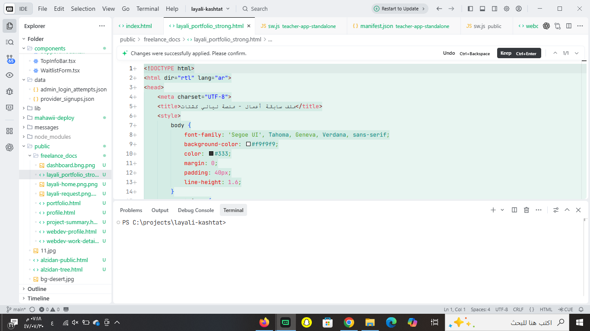

صورة بيئة العمل (VS Code)

هذه الصورة هي الإثبات القاطع لملكيتك للكود المصدري.
نموذج من هيكلية الكود (Backend API Structure):
// مسار الملف: app/api/provider-signup/route.ts
import { createRouteHandlerClient } from '@supabase/auth-helpers-nextjs';
import { cookies } from 'next/headers';
import { NextResponse } from 'next/server';
export async function POST(request: Request) {
const supabase = createRouteHandlerClient({ cookies });
const body = await request.json();
// التحقق من البيانات
const { data, error } = await supabase
.from('provider_requests')
.insert([body])
.select();
if (error) return NextResponse.json({ error: error.message }, { status: 400 });
return NextResponse.json({ success: true, data });
}
نموذج من إعدادات قاعدة البيانات (Database Config):
// مسار الملف: lib/db.ts
import { createClient } from '@supabase/supabase-js';
const supabaseUrl = process.env.NEXT_PUBLIC_SUPABASE_URL!;
const supabaseKey = process.env.NEXT_PUBLIC_SUPABASE_ANON_KEY!;
export const supabase = createClient(supabaseUrl, supabaseKey);